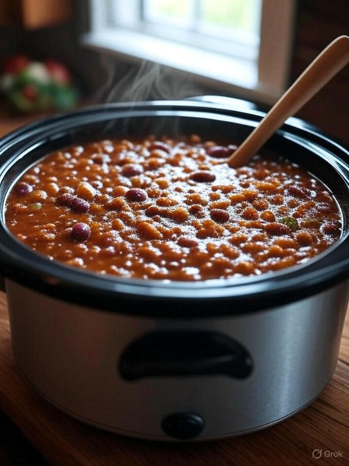

Home
Turkey Bing Chili

Description
A turkey chili in which you toss a bunch of ingredients, leave in a crockpot for a few hours, then BOOM. Tons of food, protein calories for not a lot of work. Most of the flavor will come from salt + taco seasoning NOTE: picture above not representative of recipe below
Ingredients
- 2 pounds of ground turkey
- 1 pack, taco seasoning mix
- 1 can kidney beans, drained
- 1 can crushed tomatoes
- 1 onion, chopped
- 1 can tomato soup
- 1 can black beans
- 1/4 cup chili powder
- 1 can chipotle peppers
- 1 teaspoon pepper
- 1 teaspoon paprika
- 1 teaspoon cayenne pepper
- OPTIONAL: 1 DICED jalapeno OR 1 DICED jalisco OR 1 DICED habanero pepper. More seeds = more heat
Steps
- Cook ground turkey in skillet til brown
- Drain grease, fat. Stir taco seasoning into skillet.
- Stir all other ingrdients into crock pot
- Dump turkey into crock pot
- Low heat setting = 7-8 hours
- High heat setting = 4-5 hours